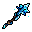
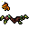
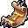
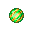

Como funciona
Aqui estão os itens mais fortes do servidor. Basta clicar na bigorna de forja para ver em detalhes os itens necessários para forjar cada peça dessa sala.
Isso torna cada item do servidor muito valioso: classe 2, 3, 4, tokens de Warzone, Major Tokens, Gold Token, Silver Token e vários outros materiais continuam úteis. A ideia é que nada seja descartável.
Itens de craft
Tabela única com o item, descrição e materiais principais.
| Categoria | Item | Descrição | Itens para craft |
|---|---|---|---|
| Amuletos e Anéis |  saintdying sigil saintdying sigil | Fist, club, sword, axe, distance e magic level +2; physical/holy/death magic level +3; critical chance +2%; critical damage +2%; life/mana leech +2%; protection physical/holy/death +5%. | Rings elementais de defesa/ataque de Death e Holy, Ring de ataque Physical, 100 Gold Token, 100 Boss Token, 100 Task Token, 50 Precious Metal Bars, 200 Warzone Token, 25 Divergence Token. |
| Amuletos e Anéis |  poisonstorm sigil poisonstorm sigil | Fist, club, sword, axe, distance e magic level +2; physical/energy/earth magic level +3; critical chance +2%; critical damage +2%; life/mana leech +2%; protection physical/energy/earth +5%. | Rings elementais de defesa/ataque de Earth e Energy, Ring de ataque Physical, 100 Gold Token, 100 Boss Token, 100 Task Token, 50 Precious Metal Bars, 200 Warzone Token, 25 Divergence Token. |
| Amuletos e Anéis |  burningfrost sigil burningfrost sigil | Fist, club, sword, axe, distance e magic level +2; physical/fire/ice magic level +3; critical chance +2%; critical damage +2%; life/mana leech +2%; protection physical/fire/ice +5%. | Rings elementais de defesa/ataque de Fire e Ice, Ring de ataque Physical, 100 Gold Token, 100 Boss Token, 100 Task Token, 50 Precious Metal Bars, 200 Warzone Token, 25 Divergence Token. |
| Amuletos e Anéis |  saintdying pendulet saintdying pendulet | Atributos ofensivos equivalentes ao sigil, com protection physical +4%, holy +5% e death +5%. | Amulets elementais de defesa/ataque de Death e Holy, Amulet de ataque Physical, 100 Gold Token, 100 Boss Token, 100 Task Token, 50 Precious Metal Bars, 200 Warzone Token, 25 Divergence Token. |
| Amuletos e Anéis |  burningfrost pendulet burningfrost pendulet | Atributos ofensivos equivalentes ao sigil, com protection physical +4%, fire +5% e ice +5%. | Amulets elementais de defesa/ataque de Fire e Ice, Amulet de ataque Physical, 100 Gold Token, 100 Boss Token, 100 Task Token, 50 Precious Metal Bars, 200 Warzone Token, 25 Divergence Token. |
| Amuletos e Anéis |  poisonstorm pendulet poisonstorm pendulet | Atributos ofensivos equivalentes ao sigil, com protection physical +4%, energy +5% e earth +5%. | Amulets elementais de defesa/ataque de Earth e Energy, Amulet de ataque Physical, 100 Gold Token, 100 Boss Token, 100 Task Token, 50 Precious Metal Bars, 200 Warzone Token, 25 Divergence Token. |
| Amuletos e Anéis | Ring of Lords | Fist, club, sword, axe e distance +4; magic level +3; todos magic levels elementais +4; critical chance/damage +3%; life/mana leech +3%; protections +6%. | 1 Burningfrost Sigil, 1 Poisonstorm Sigil, 1 Saintdying Sigil, 100kks, 25 Precious Gold Bar, 50 Divergence Tokens. |
| Amuletos e Anéis | Amulet of Lords | Fist, club, sword, axe e distance +4; magic level +3; todos magic levels elementais +4; critical chance/damage +2.01%; life/mana leech +3%; protections +6%. | 1 Burningfrost Pendulet, 1 Poisonstorm Pendulet, 1 Saintdying Pendulet, 100kks, 25 Precious Gold Bar, 50 Divergence Tokens. |
| Addons e Mountarias |  angel wings angel wings | Outfit com bônus. | 500 Silver Token, 500 Gold Token, 50 Precious Metal Bars, 200 Warzone Token. |
| Addons e Mountarias |  celestial angel doll | Outfit com bônus. | 500 Silver Token, 500 Gold Token, 50 Precious Metal Bars, 200 Warzone Token. |
| Addons e Mountarias |  naturalistic addon | Outfit com bônus. | 500 Silver Token, 500 Gold Token, 50 Precious Metal Bars, 200 Warzone Token. |
| Addons e Mountarias | Full Golden Outfit | 100 hp/mp, 1% Holy Damage, 1% Onslaught, Momentum, Ruse e Transcendence. | 1000 Gold Tokens, 50 Precious Gold Bar, 10kkk. |
| Addons e Mountarias |  FULL ROYAL COSTUME OUTFIT FULL ROYAL COSTUME OUTFIT | 100 hp/mp, 1% Onslaught, Momentum, Ruse e Transcendence. | 1000 Gold Tokens, 50 Precious Gold Bar, 10kkk. |
| Addons e Mountarias | FULL DRAGON SLAYER OUTFIT | 100 hp/mp, 1% Onslaught, Momentum, Ruse e Transcendence. | 1000 Gold Tokens, 50 Precious Gold Bar, 10kkk. |
| Utilitários |  DOUBLE TASK SCROLL DOUBLE TASK SCROLL | Recebe dobro de abates durante 4h. | 50 Silver Tokens, 50 Boss Tokens, 10kks, 25 Exalted Cores. |
| Utilitários |  TASK RENEWER | Renova tasks automaticamente durante 4h. | 50 Silver Tokens, 50 Boss Tokens, 10kks, 25 Exalted Cores. |
| Utilitários |  TOOL UPGRADE TRANSFER TOOL UPGRADE TRANSFER | Use no item com upgrade para transferir. | 50 Silver Tokens, 50 Boss Tokens, 10kks, 25 Exalted Cores. |
| Utilitários |  DUST BOTTLE REFILL DUST BOTTLE REFILL | Recupera +250 de dust. | 20kks, 25 Exalted Cores. |
| Promotion Scrolls |  Rare Promotion Scroll Rare Promotion Scroll | Dá 30 Promotion Points para Roda de Habilidades. | 20 Divergence Tokens, 100 Hard Task Tokens, 25kks. |
| Promotion Scrolls |  Epic Promotion Scroll Epic Promotion Scroll | Dá 38 Promotion Points para Roda de Habilidades. | 40 Divergence Tokens, 150 Hard Task Tokens, 37kks. |
| Promotion Scrolls |  Legendary Promotion Scroll Legendary Promotion Scroll | Dá 45 Promotion Points para Roda de Habilidades. | 60 Divergence Tokens, 250 Hard Task Tokens, 56kks. |
| Itens especiais |  UPGRADE SANGUINE UPGRADE SANGUINE | Aprimora item sanguine para Grand Sanguine. | 15 The Essence of Murcion, 15 The Essence of Ichgahal, 15 The Essence of Vemiath, 15 The Essence of Chagorz, 10 Tainted Hearts, 10 Darklight Hearts, 100kks. |
| Itens especiais |  VOID UPGRADE VOID UPGRADE | Aprimora itens Grand Sanguine em Corrupted Void. | 1 Sanguine Upgrade, 500kks. |
| Itens especiais | ANCIENT VOID ITEM | Aprimora qualquer arma Corrupted Void. | 1 Arma Corrupted Void, 100 Divergence Tokens, 500 Hard Task Token, 150 Elemental Cores, 100 Void Hearts, 100 Netherbound Hearts, 100 Major Crystalline Tokens, 50 Precious Metal Bar, 25 Precious Gold Bar, 1kkks. |
| Itens especiais |  CHALICE OF LORDS CHALICE OF LORDS | Critical chance/damage +5%, leech +5%, Fatal/Momentum/Dodge/Transcendence +2%, protections +5%. | 1 Chalice of Energy, 1 Chalice of Death, 1 Chalice of Earth, 1 Chalice of Ice, 1 Chalice of Holy, 1 Chalice of Physical, 1 Chalice of Fire, 100kks, 25 Precious Gold Bar, 50 Divergence Tokens. |
| Itens especiais | Ironblood backpack | Vol: 60, fist/club/sword/axe/distance/magic level +5, 2 imbuement slots. | 1 Poison Backpack, 1 Corrupted Backpack, 1 Lothlorien Backpack, 1 N'zoth Backpack, 60kks. |
| Upgrade Stones |  Upgrade Stone lvl 1 Upgrade Stone lvl 1 | Evolui itens até nível 4. | 10 Elemental Core, 20 Major Crystalline Tokens, 30kks. |
| Upgrade Stones |  Upgrade Stone lvl 2 Upgrade Stone lvl 2 | Evolui itens até nível 7. | 2 Upgrade Stones lvl 1, 20 Major Crystalline Tokens. |
| Upgrade Stones |  Upgrade Stone lvl 3 Upgrade Stone lvl 3 | Evolui itens até nível 12. | 2 Upgrade Stones lvl 2, 20 Major Crystalline Tokens. |
| Upgrade Stones |  Upgrade Stone lvl 4 Upgrade Stone lvl 4 | Evolui até nível 12 com 100% de chance de sucesso. | 6 Upgrade Stones lvl 1, 100 Major Crystalline Tokens, 100 Divergence Tokens. |
Mystic Hammer
Para conseguir Elemental Core, Precious Metal Bar e Precious Gold Bar, será necessário quebrar alguns itens usando o  Mystic Hammer, comprado no NPC Avalorium Character Upgrader na safezone por 10kk. Ele possui 10 cargas.
Mystic Hammer, comprado no NPC Avalorium Character Upgrader na safezone por 10kk. Ele possui 10 cargas.
| Item convertido | Recebe |
|---|---|
| Elemental Stones |  Elemental Core |
| Itens de Boss C3 e C4 |  Precious Metal Bar Precious Metal Bar |
| Itens Soulwar / Sanguine / Primal |  Precious Gold Bar Precious Gold Bar |